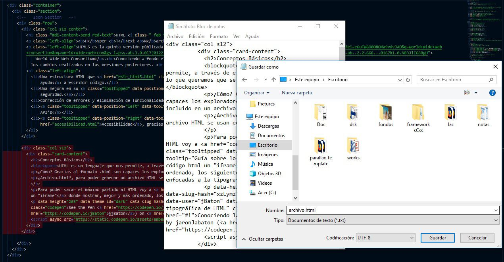
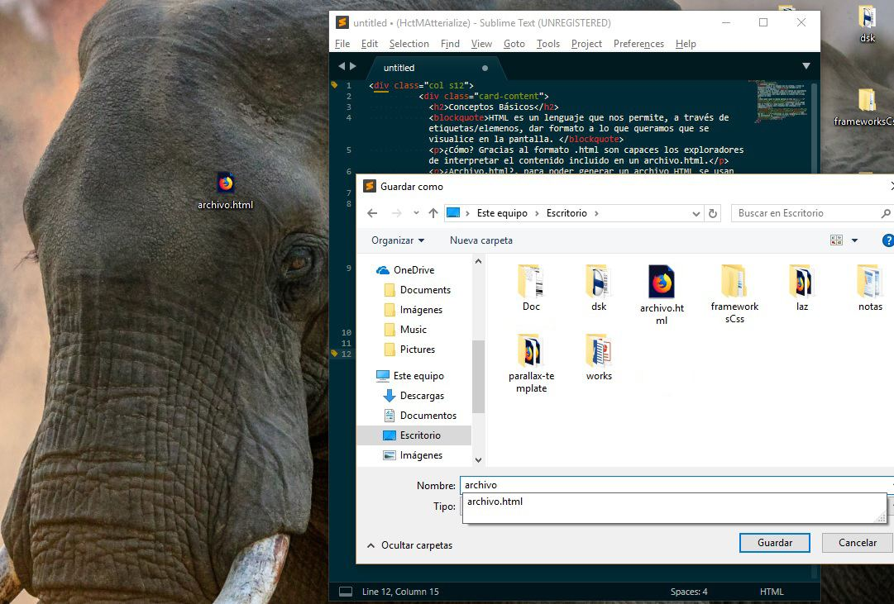
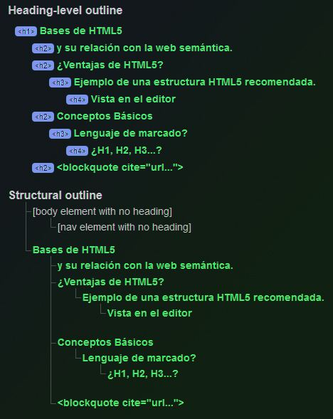

Nos resultará más fácil, visualmente, a la hora de construir un sitio web, dividiendo el documento en apartados más claros. Con nombres como "header", "body", "footer", parece que la cosa empieza a tener "Piés y Cabeza". A la hora de estructurar líneas de colores de código podemos separar por relevancia o contenido dentro de la estructura caótica pero lógica en algún punto.
La segunda ventaja nos aconseja enfocarnos en crear sitios web semánticos, proporcionando información a las computadoras para que éstas tengan una idea más clara y semejante a lo que vé o interpreta un humano. Esto ayuda a los software que pasan texto a voz, por ejemplo, o cuando una imágen no es cargada o no puede ser visualizada, podemos añadir un texto que solo será visto, leido o escuchado en caso de un error de carga. Lo logramos con las nuevas etiquetas y nuevos atributos que nos ofrece HTML5. Hay muchisimas ventajas enfocadas a permitir el mismo acceso a todo el mundo.
La versión del lenguaje de marcas hipertextuales está enfocada a "ordenar" la disposición de los elementos html y darles un "significado más 'humano'".
See the Pen Estructura HTML5 by jaronJabaton (@jBaton) on CodePen.
...
<header> <!-- La Cabecera-->
<nav></nav> <!-- El Menú de Navegación -->
</header>
<main> <!-- Indicamos que dentro de "main" estará el contenido principal -->
<section> <!-- Una Sección -->
<article></article> <!-- Artículo dentro de la sección o viceversa -->
</section>
</main> <!-- fin etiqueta main -->
<aside></aside> <!-- Espacio reservado para contenido no relacionado directamente con el sitio -->
<footer></footer> <!-- Pié de página -->
<!-- Todo debería estar contenido por una etiqueta. O bien un... -->
<div id="contenedor"></div> <!-- Tu le darás las propiedades pertinentes con CSS -->
<!-- O un... -->
<div class="container"></div>
...HTML es un lenguaje, el cual nos permite, a través de etiquetas/elementos, dar formato a lo que querámos que se visualice en la pantalla.
Cómo? Gracias al formato de archivo.html, los navegadores web, son capaces de interpretar el contenido incluido dentro. Añadir, que no solo existe el formato .html existen unos cuantos más.
¿Formato.html?, para poder generar un archivo HTML se usan editores de texto guardándolo con la extensión .html o .sgml, .htm, .xhtml, .xht, .xml... aquí puedes ir investigando un poco más sobre el tema de los "formatos de archivo" y aquí hay una lista de unos cuantos tipos de extensión.
El más usado, ya que está creado y enfocado a facilitar el trabajo de los desarrolladores es HTML, hoy por hoy. Si es cierto que XML se usa bastante, pero los conocimientos para la creación de archivos.xml son algo más complejos.


El método que usa el Ser Humano para escribir algo y que ésto sea "legible" por una máquina. Usamos "marcas" o elementos que especifican (a la máquina) lo que escribimos dentro de ellas. Sin estas "marcas" la máquina no entendería nada, bueno si, presentaría en color negro sobre fondo blanco un texto simple.
Para entender mejor que son exactamente las marcas que HTML pone a nuestra disposición, tendríamos que comprender lo básico de la programación. Cuando escribimos código HTML, estamos programando, pero sobre un programa, es decir, nosotros usamos la etiqueta <h1> que previamente a recibido unos parámetros o valores. En la mayoria de los casos <h1> tiene, entre otros, un tamaño de fuente de entre 30 y 33 píxeles. Dependiendo del tipo de fuente, el zoom del explorador y unas cuantas cosas más, estos valores son, o no, alterados, pero si no, estos píxeles serían la, digamos por defecto, medida absoluta dada para la etiqueta <h1>. "Por defecto" querría decir que están siendo dadas unas especificaciones a la etiqueta desde algúna parte... (dentro de la codificación ASCIIopen_in_new)
Podemos aprovecharnos de ello o podemos modificar todo a partir de css, indicando que la etiqueta <h1>, por ejemplo, tenga un "font-size:33px;"
Antes de seguir, veamos la utilidad de estas etiquetas... no solo como elemento gráfico para los lectores, los motores de busqueda entienden, que lo que venga después de una etiqueta <h1> tendrá más importancia que lo que venga después de un <h2>. Además de esto, les sirve para reconocer la temática de la web, lo que termina en nuestros interéses a la hora del posicionamiento web y de la indexación en los motores de busqueda.
El validador de W3C aquíopen_in_new nos muestra un "árbol" de los títulos y aconseja seguir un orden, de arriba-importante a abajo-menos importante.

Sigue...
Esta etiqueta especifica una sección que se cita de otra fuente.
Si dentro de un párrafo recurres a un texto que no es de tu autoría, html nos permite introducirlo "como parte de nuestro contenido", a cambio de indicar su origen. Puedes comentarlo en el código, hacer un enlace a su sitio web... hay muchos modos para referenciar la autoría. Haciendo esto le reenvias parte de tu tráfico diario. Permites al usuario obtener distintas fuentes de información y das sentido a la parte que dice "Hypertext" de HTML.
"Qué sería de los motores de busqueda si todos nos enlazasemos entre todos manteniendo un orden temático" jBaton.